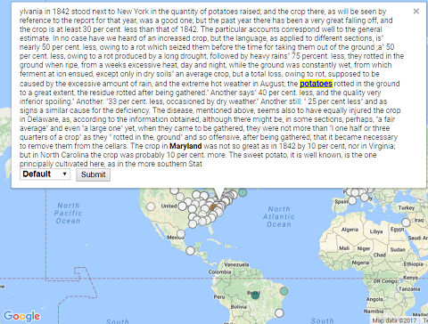
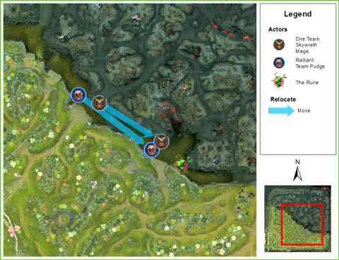
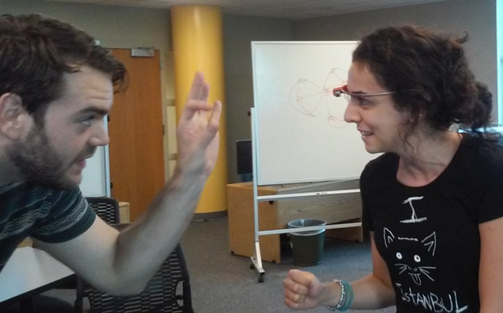
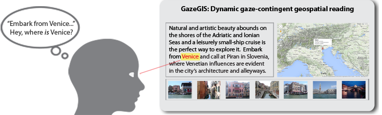

Laura Tateosian
CGA Team: Laura Tateosian, Yi-Peng Yang
Department of Entomology and Plant Pathology Collaborators: Jean Ristaino, Amanda Saville, Rachael Guenter
The movement of plant pathogens into new geographic areas is a major factor in the emergence of novel virulent lineages that threaten food security. It is important to develop more sophisticated methods to track emerging plant disease outbreaks. A tragic example is the devastating disease that struck Ireland's potato crop in 1845 and led to mass starvation and emigration from the country. The cause of the potato destruction was a fungus-like plant pathogen. There are several theories about the origin of the disease and the source of the 19th century outbreaks, but the geographic source and path of spread are as yet uncertain. We use historical agricultural documents containing extensive discussions of crop yields and failures, seed export and import, and weather conditions, along with location names to investigate spatial information that might inform these mysteries. We programmatically extract information from these voluminous data sources to map geographic locations that are proximate in the text to key terms related to potato blight. The resulting interactive Web mapping tool is being use to spatially explore the pertinent data for trends in the emergence of 19th century late blight.

CGA Team: Laura Tateosian, Michelle Glatz, Makiko Shukunobe
Liquid Narrative Collaborators: R. Michael Young, Camille Barot, Colin Potts, Markus Eger
Narratives, such as news articles, history books, and blogs, enable us to assimilate disparate facts. Maps, though not always included with the narratives, can greatly improve comprehension of real-world or fictional storylines. The Liquid Narrative lab at in the NC State Computer Science Department is working on generating cohesive natural language stories from low-level event data. We're working on automatically generate maps to illustrate spatial story components. While traditional maps display location, spatial relationships, and spatial phenomena, story maps not only need to locate the narrative action and show proximity and movement of characters, but also need to display characters’ spatial conceptions such as their intended movements or perceptions of spatial relationships. We are developing a system that consumes story events to generate maps to display locations, movements, localized interactions, and spatial beliefs and intentions. We are testing our system on a dataset of events from an online multi-player battle game data DoTA2. In controlled experiments, we have seen how stories told with automatically generated maps can excite and stimulate a reader’s imagination.

CGA Team: Laura Tateosian, Molly Foley, Paul Schrum
DELTA Collaborators: Stephen Bader, Benjamin Huckaby, Cathi Phillips, Jeff Webster
GIS 540, GIS Programming Fundamentals, is a fast-moving core course in the Center’s MGIST program. This course empowers participants to save time by using Python for efficient GIS data processing and analysis. Student-centered learning with numerous hands-on exercises encourage students to roll up their sleeves up and learn through practice.
The Py4All portal under development will give students automated feedback on their work. Targeted tips and hints guide students in the right direction and reinforce key learning concepts; Visualizations display summary statistics of peer performance on the same task. The tool will engage Distance Education and traditional students by increasing the sense of community and attracting participation with innovative technology.

CGA Team: Laura Tateosian, Michelle Glatz, Makiko Shukunobe
LAS Collaborator: Tonya Adelsperger
Location is an important component of a narrative. Mapped place names
provide vital geographical, economic, historical, political, and cultural context for the text. Online sources such as news articles, travel logs, and blogs frequently refer to geographic locations, but often these are not mapped. When a map is provided, the reader is still responsible for matching references in the text with map positions. As they read a place name within the text, readers must locate its map position, then find their place again in the text to resume reading, and repeat this for each toponym.
GazeGIS combines eye tracking and geoparsing to create a cohesive dynamic reading experience by mapping locations just as the eyes read their names in the text.
This could change the way we read online news and e-books, the way school children study political science and geography, the way officers study military history, the way information analysts consume reports, and the way we plan our next vacation!

CGA Team: Laura Tateosian , Helena Mitasova, Margery Overton
RENCI Collaborator: Sidharth Thakur